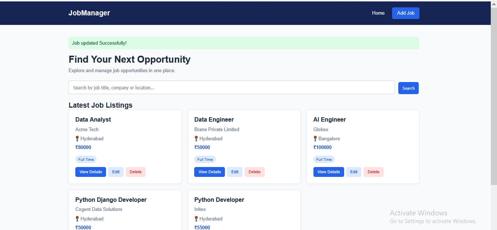

Backend development
Python · Django · REST APIs
HELLO, I'M NALINI
Python & Django Developer focused on backend development, clean APIs, and practical web applications. I enjoy turning problems into simple, reliable solutions.
01 / A LITTLE INTRO
I’m a developer who likes understanding how things work — especially behind the scenes.
I’m a Computer Science graduate working in Python and Django development. I’m building my skills in backend engineering through hands-on work, continuous learning, and personal projects.
My current interests include designing REST APIs, working with databases, writing maintainable Python, and improving how applications perform.
02 / MY TOOLKIT
Tools I use and concepts I’m actively strengthening.
Python · Django · REST APIs
SQL · MySQL · ORM basics
Git · GitHub · Postman
HTTP · JSON · API testing
Skill indicators are visual highlights, not formal proficiency scores.
03 / THE JOURNEY
Working on backend development and application testing, with a focus on Python-based web applications, APIs, and database-driven features.
Gained practical exposure to web data workflows, automation tools, and software development processes.
Vijaya Institute of Technology for Women
03.5 / HOW I CAN HELP
Clear, small, fixed-scope jobs.
Clean, merge, and reformat files with Python
Write and fix SELECT, JOIN, and GROUP BY queries
Small scripts, error fixing, simple automation
Small features, forms, and bug fixes in Django apps
04 / WHAT I'VE BUILT
A small Django project, with more on the way.

01 / DJANGO APPA Django app to add, view, edit, delete and search job listings, with form validation and an SQLite database. Sample data is fictional.
This is a learning project, not a production application. More projects (CSV processing, MySQL queries, automation scripts) will be added here.
05 / HAVE A CONVERSATION
Interested in backend development, collaboration, or sharing ideas? I’d be happy to connect.
Update the email address in script.js before publishing.